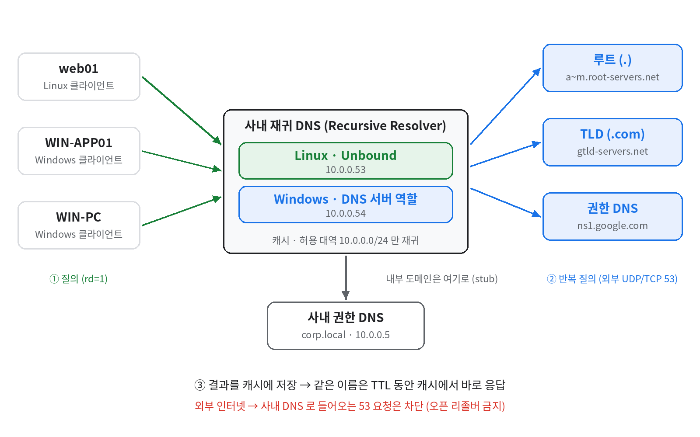
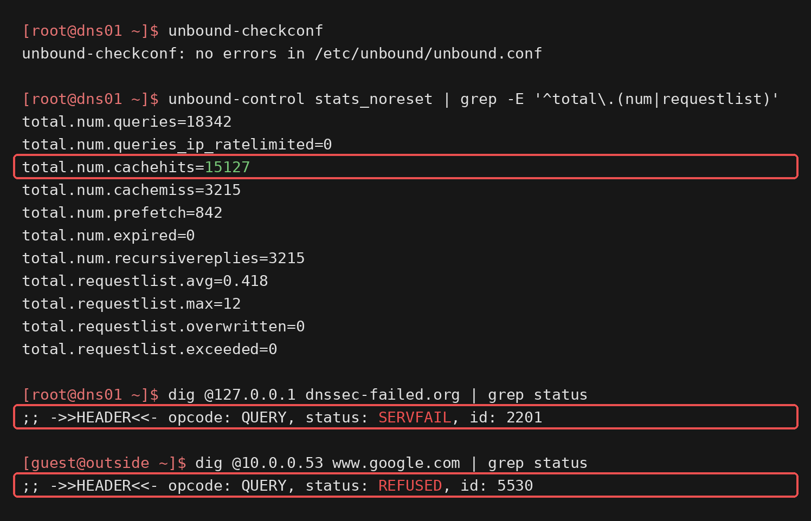
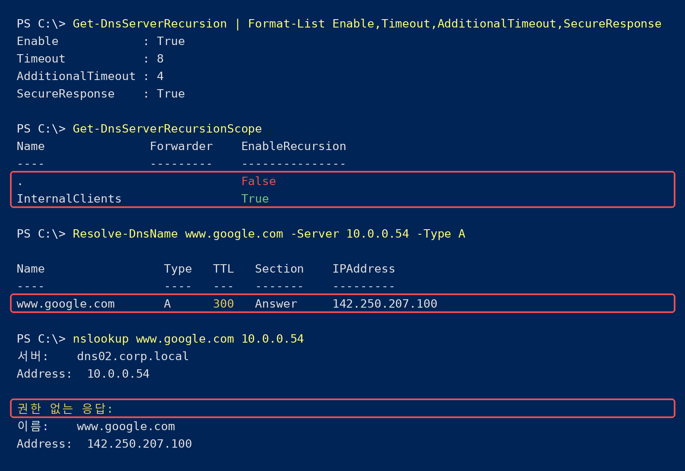
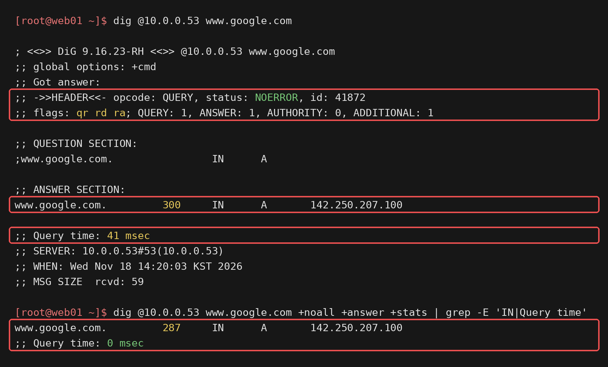

웹 & 네트워크 서비스
사내 재귀 DNS(Recursive Resolver) 구성 — Unbound · Windows DNS
서버와 PC가 각자 외부 DNS(통신사, 8.8.8.8)를 쓰면 외부 53 포트를 모두 열어야 하고, 내부 도메인 조회와 로그 추적도 어렵습니다. 사내에 재귀 DNS를 두고 모든 단말이 이곳만 쓰게 했습니다. Linux(Unbound)와 Windows(DNS 서버 역할) 두 가지 방법과, 클라이언트에서 결과를 읽는 방법을 정리합니다.
1. 재귀 DNS란

| 구분 | 권한(Authoritative) DNS | 재귀(Recursive) DNS |
|---|---|---|
| 역할 | 자기 도메인의 레코드를 "정답"으로 응답 | 클라이언트 대신 루트 → TLD → 권한 DNS 순서로 찾아 주고 결과를 캐시 |
| 누가 질의 | 전 세계 재귀 DNS | 사내 클라이언트만 |
| 예 | ns1.google.com, 사내 corp.local DNS | 통신사 DNS, 8.8.8.8, 이 페이지의 서버 |
| 응답 표시 | aa 플래그 (권한 있는 응답) | ra 플래그, nslookup "권한 없는 응답" |
레코드 종류(A, CNAME, MX, TXT 등)는 DNS 레코드 정리를 참고하세요.
직접 재귀 vs 포워딩
- 직접 재귀: 루트 서버부터 직접 찾음. 외부 DNS 업체에 의존하지 않고 DNSSEC 검증을 직접 함 (이 페이지 기본)
- 포워딩: 모르는 이름은 통신사 DNS 등에 대신 물어봄. 외부로 나가는 53 목적지를 몇 곳으로 줄여야 하는 방화벽 환경에 적합
2. 마스터 A: Linux Unbound
Unbound는 재귀·캐시 전용으로 만들어진 DNS 서버라, BIND보다 설정이 짧고 기본값이 안전합니다.
dnf install -y unbound bind-utils# /etc/unbound/conf.d/resolver.conf (재귀 DNS 10.0.0.53)
server:
# 대기 주소
interface: 127.0.0.1
interface: 10.0.0.53
port: 53
do-ip6: no
# 재귀 허용 대역 (나머지는 거부 → 오픈 리졸버 방지)
access-control: 0.0.0.0/0 refuse
access-control: 127.0.0.0/8 allow
access-control: 10.0.0.0/24 allow
# 정보 노출 최소화
hide-identity: yes
hide-version: yes
# 보안 강화
harden-glue: yes
harden-dnssec-stripped: yes
qname-minimisation: yes # 상위 서버에 필요한 만큼만 전달
ip-ratelimit: 200 # IP 하나당 초당 질의 제한
# 성능
num-threads: 2
prefetch: yes # TTL 만료 직전 인기 이름을 미리 갱신
msg-cache-size: 64m
rrset-cache-size: 128m
verbosity: 1
# 내부 도메인은 사내 권한 DNS 로 (외부에 묻지 않음)
stub-zone:
name: "corp.local"
stub-addr: 10.0.0.5
server:
domain-insecure: "corp.local" # 내부 도메인은 DNSSEC 검증 제외 (안 하면 SERVFAIL)
# 내부 역방향 조회
server:
local-zone: "10.in-addr.arpa." nodefault
domain-insecure: "10.in-addr.arpa."
stub-zone:
name: "10.in-addr.arpa."
stub-addr: 10.0.0.5# 포워딩 방식으로 운영할 경우 (직접 재귀 대신) — 위 파일에 추가
forward-zone:
name: "."
forward-addr: 168.126.63.1 # KT
forward-addr: 8.8.8.8# 문법 확인 → 실행
unbound-checkconf
systemctl enable --now unbound
# 방화벽: 사내 대역에서만 53 허용
firewall-cmd --permanent --add-rich-rule='rule family=ipv4 source address=10.0.0.0/24 service name=dns accept'
firewall-cmd --reload
# 운영 명령
unbound-control status
unbound-control stats_noreset | grep total.num # 질의·캐시 통계
unbound-control flush www.example.com # 특정 이름 캐시 삭제
unbound-control flush_zone example.com # 도메인 전체 캐시 삭제
BIND(named)를 이미 쓰고 있다면 같은 동작을 아래처럼 설정합니다.
options {
listen-on port 53 { 127.0.0.1; 10.0.0.53; };
allow-query { localhost; 10.0.0.0/24; };
recursion yes;
allow-recursion { localhost; 10.0.0.0/24; };
dnssec-validation auto;
version "none";
};
zone "corp.local" { type forward; forward only; forwarders { 10.0.0.5; }; };3. 마스터 B: Windows DNS 서버
Windows DNS 서버 역할은 설치하면 재귀가 기본으로 켜져 있고, 루트 힌트(루트 서버 목록)도 들어 있습니다. 관리자 PowerShell에서 실행합니다.
# 1) 역할 설치 (방화벽 규칙은 자동 생성)
Install-WindowsFeature DNS -IncludeManagementTools
# 2) 재귀 상태 확인
Get-DnsServerRecursion
Get-DnsServerRootHint | Select-Object -First 3
# 3) (선택) 포워딩 방식: 통신사 DNS 에 묻고, 실패 시 루트 힌트 사용
Set-DnsServerForwarder -IPAddress 168.126.63.1, 8.8.8.8 -UseRootHint $true
# 4) 내부 도메인은 사내 권한 DNS 로
Add-DnsServerConditionalForwarderZone -Name "corp.local" -MasterServers 10.0.0.5재귀를 사내 대역에만 허용 (Windows Server 2016 이상)
Windows DNS는 Unbound의 access-control 같은 한 줄 설정이 없어서, 재귀 범위(Recursion Scope)와 질의 정책으로 만듭니다. 기본 범위는 재귀를 끄고, 사내 대역만 재귀가 켜진 범위를 쓰게 합니다.
# 기본(.) 범위는 재귀 끔
Set-DnsServerRecursionScope -Name . -EnableRecursion $false
# 재귀 허용 범위 생성
Add-DnsServerRecursionScope -Name "InternalClients" -EnableRecursion $true
# 사내 대역 정의
Add-DnsServerClientSubnet -Name "InternalSubnet" -IPv4Subnet 10.0.0.0/24
# 사내 대역에서 온 질의만 재귀 허용 범위 사용
Add-DnsServerQueryResolutionPolicy -Name "AllowRecursionInternal" -Action ALLOW `
-ApplyOnRecursion -RecursionScope "InternalClients" -ClientSubnet "EQ,InternalSubnet"
# 확인
Get-DnsServerRecursionScope
Get-DnsServerQueryResolutionPolicy# 대기 주소를 사내 IP 로 제한 (여러 NIC 인 경우)
$s = Get-DnsServerSetting -All
$s.ListeningIPAddress = @("10.0.0.54")
Set-DnsServerSetting -InputObject $s
# 캐시 확인·삭제
Show-DnsServerCache | Select-Object -First 10
Clear-DnsServerCache -Force
AD 도메인 컨트롤러의 DNS를 재귀 DNS로 같이 쓰는 경우가 많습니다. 이때도 외부에서 DC의 53 포트로 들어오는 요청은 반드시 막아야 합니다. 외부에 열린 재귀 DNS는 DNS 증폭 DDoS 공격에 악용됩니다.
4. 클라이언트 설정
Linux
# NetworkManager (자동으로 /etc/resolv.conf 반영)
nmcli con mod bond0 ipv4.dns "10.0.0.53 10.0.0.54" ipv4.dns-search corp.local ipv4.ignore-auto-dns yes
nmcli con up bond0
cat /etc/resolv.confWindows
Set-DnsClientServerAddress -InterfaceAlias "Ethernet" -ServerAddresses 10.0.0.54, 10.0.0.53
Clear-DnsClientCache # PC 자체 캐시 비우기 (ipconfig /flushdns 와 같음)
Get-DnsClientServerAddress -AddressFamily IPv4재귀 DNS를 두 대(Linux·Windows 각각 또는 같은 종류 2대) 두고 클라이언트에 둘 다 등록하면, 한 대가 멈춰도 이름 조회가 계속됩니다.
5. Linux 클라이언트: dig 출력 필드 의미

| 부분 | 필드 | 의미 |
|---|---|---|
| HEADER | status | NOERROR 정상NXDOMAIN 그런 이름 없음 (오타·미등록)SERVFAIL 재귀 DNS가 답을 못 얻음 (상위 응답 없음, DNSSEC 검증 실패)REFUSED 이 DNS가 거부 (허용 대역 밖, 재귀 꺼짐) |
| id | 질의 번호. 응답이 질의와 짝이 맞는지 확인용 | |
| flags | qr / rd / ra | qr 응답임 · rd 재귀를 요청함(클라이언트가 보냄) · ra 재귀 가능(서버가 재귀를 해 줌). 재귀 DNS 확인의 핵심은 ra. 없으면 재귀가 꺼져 있거나 허용 대역 밖 |
| aa / ad / tc | aa 권한 있는 응답 (권한 DNS가 직접 답함) · ad DNSSEC 검증 통과 · tc 응답이 잘려 TCP로 다시 물어야 함 | |
| 개수 | QUERY / ANSWER / AUTHORITY / ADDITIONAL | 각 섹션의 레코드 수. ANSWER 0 + NOERROR = 이름은 있지만 그 종류(예: AAAA) 레코드는 없음 |
| QUESTION | 무엇을 물었는지 (이름, 클래스 IN, 종류 A) | |
| ANSWER | 이름 · TTL · 클래스 · 종류 · 값 | www.google.com. 300 IN A 142.250.207.100 → 이 이름의 IPv4 주소, 300초 동안 캐시 가능 |
| TTL 변화 | 재귀 DNS 캐시에서 나온 응답은 남은 시간이 표시되므로 다시 조회할 때마다 줄어듦 (300 → 287). 줄어들면 캐시가 동작 중 | |
| 통계 | Query time | 응답까지 걸린 시간. 캐시에 있으면 0~1ms, 처음이면 수십 ms |
| SERVER | 실제로 답한 DNS 서버. 의도한 사내 DNS인지 확인 | |
| MSG SIZE rcvd | 응답 크기 (바이트) |
# 자주 쓰는 확인
dig @10.0.0.53 www.google.com +short # 결과 값만
dig @10.0.0.53 www.google.com +trace # 루트부터 찾아가는 과정 (클라이언트가 직접 수행)
dig @10.0.0.53 -x 10.0.0.31 # 역방향 (IP → 이름)
dig @10.0.0.53 corp.local SOA # 내부 도메인이 stub 으로 잘 가는지
dig @10.0.0.53 dnssec-failed.org | grep status # DNSSEC 검증 동작 → SERVFAIL 이 정상6. Windows 클라이언트: Resolve-DnsName · nslookup 필드 의미
Resolve-DnsName
| 필드 | 의미 |
|---|---|
| Name | 응답 레코드의 이름 |
| Type | 레코드 종류 (A, AAAA, CNAME, MX …) |
| TTL | 남은 캐시 시간(초). dig와 마찬가지로 다시 조회하면 줄어듦 |
| Section | Answer 답 · Authority 권한 서버 정보 · Additional 부가 정보 |
| IPAddress / NameHost | A·AAAA는 IP, CNAME·PTR은 대상 이름 |
Resolve-DnsName www.google.com -Server 10.0.0.54 # 특정 DNS 서버에 질의
Resolve-DnsName www.google.com -Server 10.0.0.54 -DnsOnly # hosts 파일·NetBIOS 제외
Resolve-DnsName www.google.com -NoHostsFile -QuickTimeout
Get-DnsClientCache | Where-Object Entry -like "*google*" # PC 자체 캐시 확인nslookup
| 표시 | 의미 |
|---|---|
| 서버 / Server | 질의한 DNS 서버의 이름. 이름이 안 나오고 UnKnown이면 그 서버 IP의 역방향(PTR) 레코드가 없다는 뜻으로, 조회 자체는 정상 |
| Address (첫 번째) | 질의한 DNS 서버의 IP |
| 권한 없는 응답 / Non-authoritative answer | 권한 DNS가 아니라 재귀 DNS(캐시)가 대신 답했다는 뜻. 재귀 DNS에서는 정상 |
| 이름 / Name, Address (두 번째) | 조회한 이름과 결과 IP |
| Aliases | CNAME으로 연결된 다른 이름 |
*** ... 을(를) 찾을 수 없습니다: Non-existent domain | NXDOMAIN (이름 없음) |
Query refused | REFUSED (허용 대역 밖·재귀 꺼짐) |
DNS request timed out | 서버 응답 없음 (방화벽 53, 서비스 중지) |
7. 트러블슈팅
| 증상 | 원인 및 해결 |
|---|---|
REFUSED | Unbound access-control / Windows 재귀 정책에 클라이언트 대역 누락 |
ra 플래그 없음 | 재귀가 꺼진 서버(권한 전용 DNS)에 질의 중. 클라이언트 DNS 주소 확인 |
모든 외부 이름이 SERVFAIL | 재귀 DNS에서 외부 53(UDP·TCP) 차단, 또는 서버 시간이 틀려 DNSSEC 서명 검증 실패 → NTP 동기화 확인 |
특정 도메인만 SERVFAIL | 그 도메인의 DNSSEC 설정 오류. dig +cd(검증 끄고 조회)로 응답이 오면 상대 도메인 문제 |
내부 도메인 NXDOMAIN | stub-zone / 조건부 전달자 누락, Unbound domain-insecure 누락(SERVFAIL), 또는 local-zone ... nodefault 누락으로 사설 역방향이 차단됨 |
| 레코드를 바꿨는데 옛 IP가 나옴 | TTL 동안 캐시 유지. 재귀 DNS 캐시 삭제(unbound-control flush, Clear-DnsServerCache) + 클라이언트 캐시 삭제(ipconfig /flushdns) |
Linux에서 /etc/resolv.conf가 다시 바뀜 | NetworkManager가 관리 중. 파일 대신 nmcli ... ipv4.dns로 설정 |
| 응답이 느림 (매번 수백 ms) | 캐시 미적중 계속 → TTL 0 응답이 많거나 외부 경로 지연. unbound-control stats_noreset로 cachehits 비율 확인, prefetch: yes |